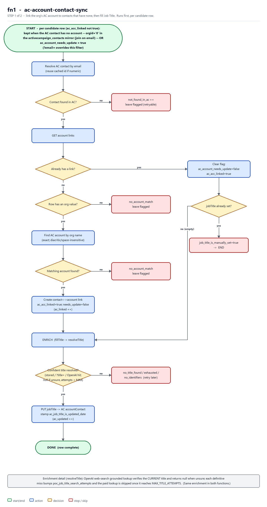
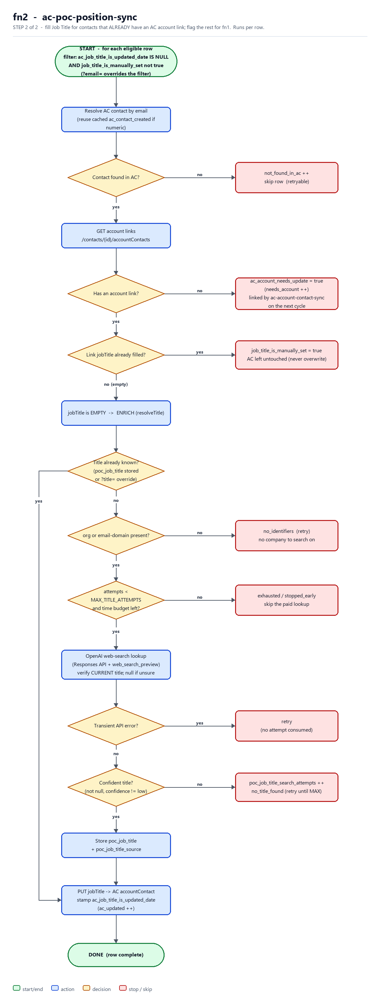

Two Supabase edge functions that link contacts to their org account and fill contact job titles
Many leads in our sales tables have an ActiveCampaign (AC) contact whose Job Title is blank. This automation finds each person's job title and writes it into AC — but only when the field is currently empty, so a human-entered title is never overwritten. It runs as two small functions you call one after another from n8n: the first attaches a company account to contacts that don't have one and then fills the title, and the second fills titles for contacts that already have a company attached.
It works across four lead tables in the Supabase project MAGTestProject: manually_found_leads, ai_scraped_soc_med_leads, manually_found_cold_leads, and ai_verified_cold_leads.
For each lead it will:
A key detail about AC: there is no standalone "Job Title" field. A contact's job title lives on the link between the contact and their company account. So a contact with no company attached has nowhere to store a title — which is exactly what the second function fixes.
Handles contacts that don't have a company attached in AC. It finds them from our local mirror of AC contacts: any lead whose contact has no company (its orgid is '0'), plus any row previously flagged ac_account_needs_update = true. Contacts we've already linked are skipped.
org (company name) among AC's existing company accounts.ac_acc_linked = true, then fills the job title and stamps the date.Handles contacts that already have a company attached in AC:
job_title_is_manually_set = true.ac_account_needs_update = true so the first function links it on the next cycle (no enrichment spent here).The hand-off is clean: if the first function attaches a company but the title can't be found that run, the second function picks the title up on the next cycle.
These diagrams trace what each function does for a single lead row, from the rows it selects down to each possible outcome. Green is start/end, blue is an action, amber is a decision, and red is a stop or skip. (Click a diagram to view it full size.)
Selects contacts with no company attached in AC — found via the activecampaign_contacts mirror (orgid = '0') or the ac_account_needs_update flag — attaches the matching company account, then fills the title.

ac-account-contact-sync — link the org account, then fill the Job Title.
Fills the Job Title for contacts that already have a company attached; any contact still missing a company is flagged for the first function to link on the next cycle.

ac-poc-position-sync — fill the Job Title for already-linked contacts.
The whole thing is two Supabase Edge Functions (small serverless scripts) that read the lead tables, talk to two outside services, and write results back. End to end:
Each function accepts the same options on the request:
?sync=1 — run immediately and return a summary (otherwise it runs in the background).?limit=N — how many rows to process this run (default 10).?email=<address> — process just one lead by email (handy for re-processing a single record).?title=<text> — set a specific title by hand instead of searching (still never overwrites an existing AC title).In normal use, n8n calls ac-account-contact-sync first and ac-poc-position-sync second, each with a sensible limit. The returned summary counts what happened: companies attached, titles written, titles already set, rows still needing a company, and so on.
org exactly matches an AC account name (ignoring accents and spacing). Typos or variant names (e.g. a misspelled company) are left for a person to handle, so a contact is never attached to the wrong company.Updated by: Julienne
Last Update: 1 October 2026